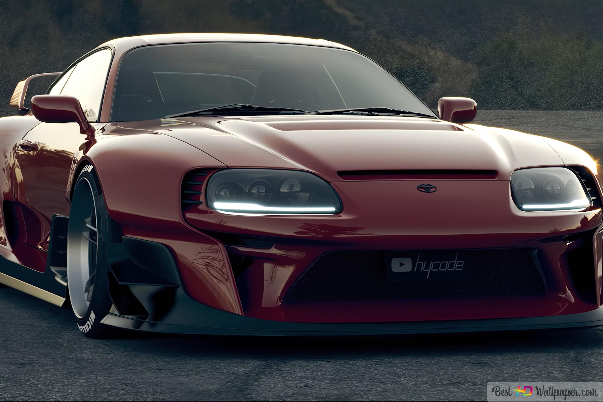
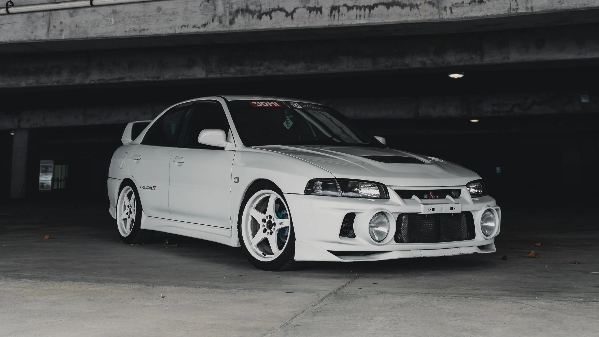
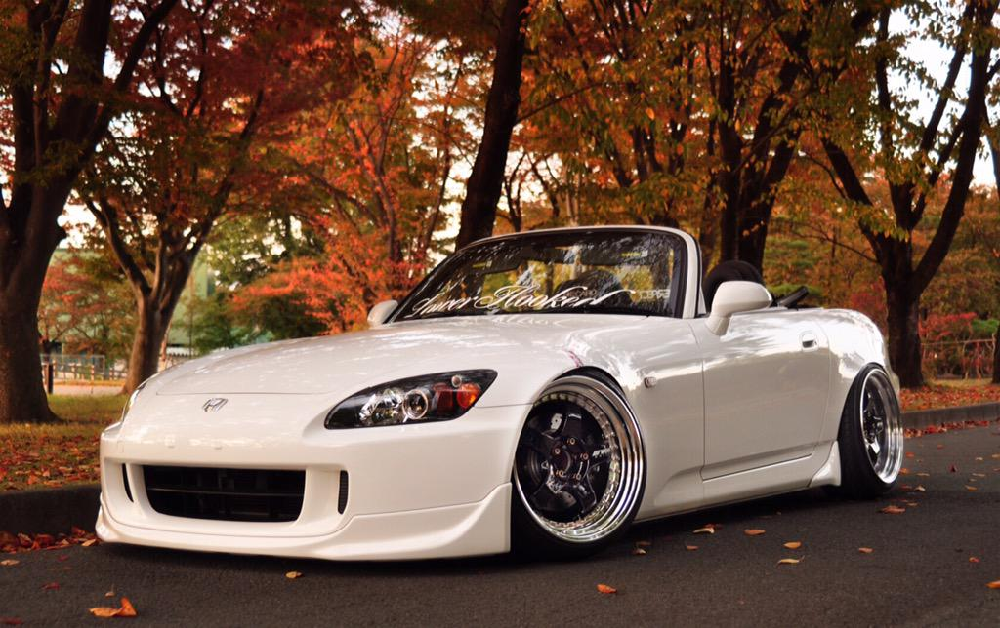
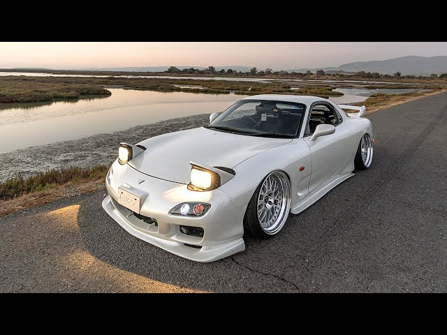

JDM CARS (JAPAN)
JDM refers to a Japanese domestic market car — one originally sold and produced in Japan. These purpose-built models
differ from exports in their compact size, simple design, and unique tuning capabilities.
TOYOTA SUPRA MK4
The Toyota Supra has long been a worthy contender on the JDM "best of". The Fourth-generation (A80) Mk4 shot to stardom and became an all-time fan favourite when it was featured in the "Fast and the Furious" movie franchise.
MITSUBISHI LANCER EVOLUTION VI
The Japanese dominated the World Rally Championship in the 90's, but none more so tha Mitsubishi. The brand had given Tommi Makinen four championships in a row 1996 to 1999.The Lancer Evolution VI was introduced in January 1999 nad quickly went to work around rally stages.
HONDA S2000
The S2000 is named for its engine displacement of two litres, while "S" stood for "sports" carrying on in the tradition of the S500, S600, and S800 roadsters of the 1960s.
MAZDA RX7
The Mazda Savanna is a rotary-powered automobile sold by the Japanese manufacturer Mazda between 1971 and 1978. Between 1978 and 1991, spanning two generations, Mazda sold the Savanna replacement as the Mazda Savanna RX-7. Mazda exclusively used the Savanna nameplate in Japan.
©ALL ABOUT CARS 2024